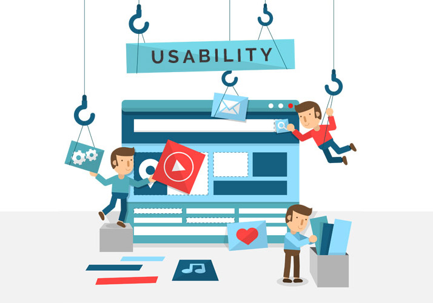

Usability
The initial design of COMP 1950 is clutter with lots of information and it is confusing for first time users to find information they need. For those who have been to the web page, it often requires a lot of clicking and scroll in order to find the information they need. In our newly designed page, we simply the user interface so that users can easily navigate to different section and find the information they need.
Landing Page
- Simplified landing page with visual and easy-to-find button provide quick and easy access to different pages of the webpage.
- Reorganize information so it is not clutter and easy to read.
- Short summery of the course and easy-to-find contact information of the instructor at the footer.
- Include image and comfortable color scheme to make webpage more sophisticated and inviting. As this is a web design and development course, a more sophisticate webpage will boost users’ confidence in the course being offer. Using BCIT colour scheme – consistent design to remind user that this is part of BCIT web page.
- Website is responsive: it can be view in different size of device without issue with content being cut off or difficult to read. This enable users to check the website for quick access or study using their mobile devices.
Content Page: Lecture/About/Resource
- Simple design separate bookmark from contact using colors.
- Bookmark link on left panel for easy access to different section of the lecture without excessive scrolling. It also shows which section the user is currently reading.
- Links to different lecture on the top left corner – user can jump to different lecture easily
- Easy-to-find links to other web pages on the top right corner
- Code samples and home pdf or any other lecture materials can be downloaded at the end of the lecture page
